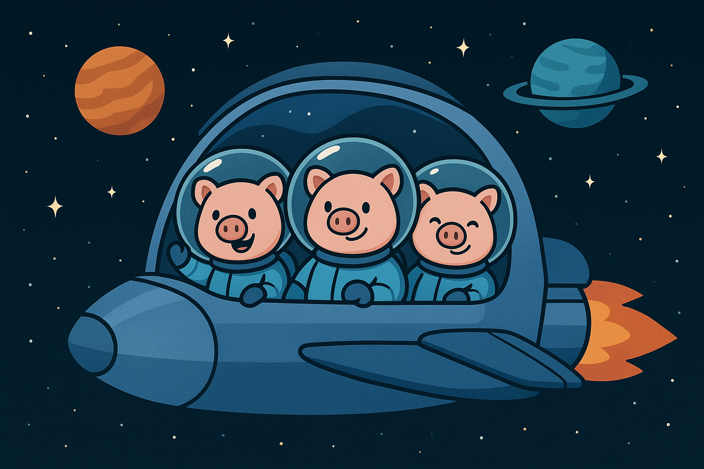
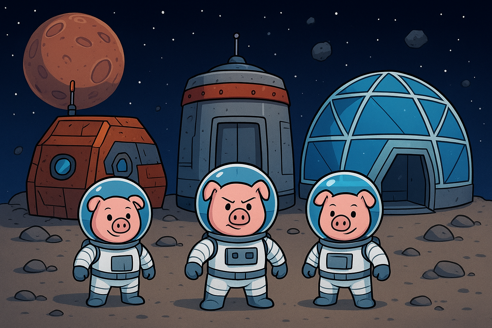
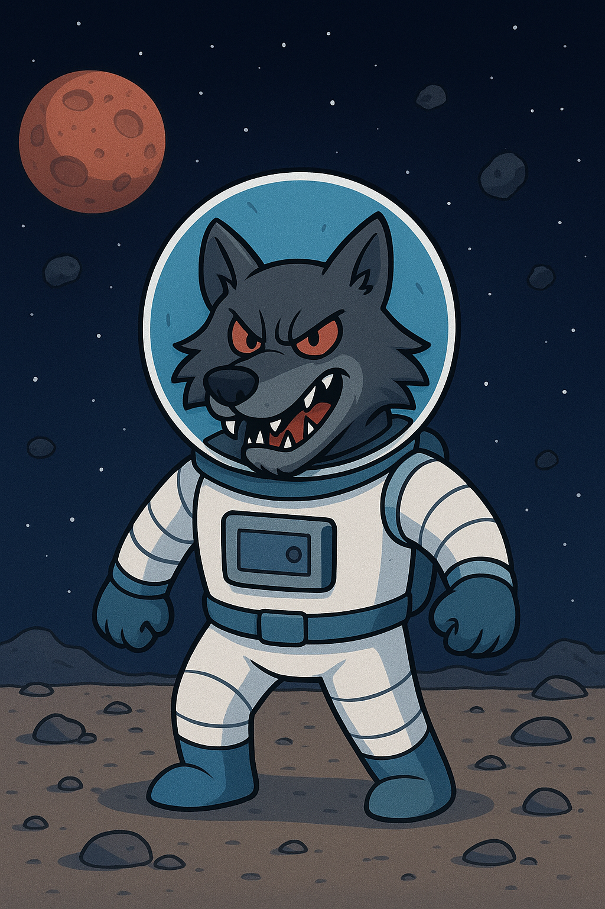

Introducción
En un rincón lejano de la galaxia, tres cerditos espaciales viajaban entre estrellas buscando un nuevo hogar. Cansados de huir de meteoritos, agujeros negros y piratas cósmicos, decidieron construir sus propias bases interplanetarias… pero jamás imaginaron que el Lobo Galáctico los estaba observando.
Las bases espaciales
El primer cerdito construyó su base con chatarra espacial liviana. Era rápida de ensamblar, pero cualquier asteroide podía destrozarla.
El segundo cerdito usó placas metálicas recicladas de naves abandonadas. Era resistente, pero no soportaba vibraciones gravitacionales fuertes.
El tercer cerdito, el más paciente y sabio, construyó una estación orbital completa con escudos energéticos y paredes reforzadas con aleación de mithril estelar.
El Lobo Galáctico
El temido Lobo Galáctico, una criatura de energía oscura que viajaba a la velocidad de la luz, descubrió a los cerditos y decidió probar la resistencia de sus construcciones.
El desenlace
El Lobo sopló con una onda gravitatoria la base del primer cerdito… y salió volando. Luego lanzó un rayo de radiación solar a la segunda base… y se desintegró.
Pero cuando intentó destruir la estación orbital del tercer cerdito, sus escudos energéticos devolvieron el ataque, creando un estallido luminoso que hizo huir al Lobo Galáctico hacia otra galaxia.
Los tres cerditos celebraron y decidieron vivir todos juntos en la estación más resistente. Desde entonces exploran el universo protegidos por su sabiduría y su increíble tecnología.